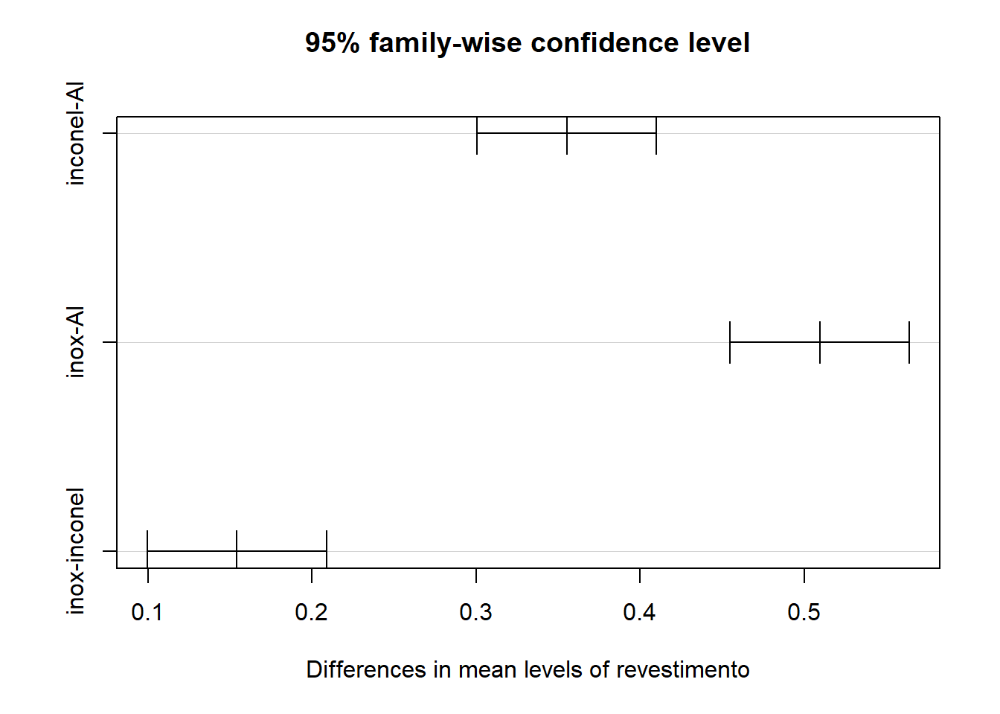

library(ggplot2)
library(ScottKnott)Planejamento totalmente aleatorizado/ANOVA para um fator
Carregando Pacotes.
Três tipos de revestimentos metálicos foram aplicados via aspersão térmica em corpos de prova tubulares para uso em caldeiras. Os tipos de revestimento sao Alumínio, inox 308 e inconel 625. Ensaios de corrosão acelerada em uma câmara de dióxido de enxofre foram realizados. Os resultados de ganho de massa em gramas foram medidos apos 72h. Foram realizadas 8 replicações para cada tratamento. Teste se há diferença entre os revestimentos.
Planejamento e resultados
Dados de ganho de massa.
Al <- c(0.788, 0.878, 0.804, 0.806, 0.886, 0.823,
0.737, 0.766)
inox <- c(1.278, 1.361, 1.318, 1.320, 1.301, 1.272,
1.389, 1.325)
inconel <- c(1.102, 1.235, 1.176, 1.147, 1.189, 1.149,
1.164, 1.169)Dados do planejamento.
a <- 3 # tratamentos
n <- length(Al) # numero de replicas
N <- a*n # numero de experimentosOrdem de condução dos ensaios.
set.seed(13)
ordem <- sample(1:N, size = N, replace = F)Tratamentos.
revestimento <- c(rep("Al", n),
rep("inox", n),
rep("inconel", n))
revestimento <- as.factor(revestimento)Vetor de resultados.
ganho <- c(Al, inox, inconel)Planejamento totalmente aleatorizado.
planejamento <- data.frame(ordem,
revestimento,
ganho)Salvando o planejamento.
write.csv(planejamento, "planejamento.csv")Gráficos
Box-plot.
ggplot(planejamento,
aes(x= revestimento,
y=ganho,
col=revestimento)) +
geom_boxplot() +
geom_jitter(col = "grey") +
theme_bw() +
theme(legend.position = "none")Gráfico de médias.
ggplot(planejamento,
aes(x= revestimento,
y= ganho,
group=1)) +
stat_summary(fun = mean,
geom = "line") +
stat_summary(fun.data = mean_cl_boot,
geom = "errorbar",
width = 0.2) +
geom_jitter(aes(col = revestimento),
width = 0.2) +
theme_bw() +
theme(legend.position = "none")ANOVA
res.anova <- aov(ganho ~ revestimento,
data = planejamento)
summary(res.anova) Df Sum Sq Mean Sq F value Pr(>F)
revestimento 2 1.0924 0.5462 291.1 4.89e-16 ***
Residuals 21 0.0394 0.0019
---
Signif. codes: 0 '***' 0.001 '**' 0.01 '*' 0.05 '.' 0.1 ' ' 1F-crítico (F-tab).
f_tab <- qf(0.05, df1 = a-1, df2 = a*n-a,
lower.tail = F)Ajuste do modelo.
lm1 <- lm(ganho ~ revestimento,
data = planejamento)
summary(lm1)
Call:
lm(formula = ganho ~ revestimento, data = planejamento)
Residuals:
Min 1Q Median 3Q Max
-0.074000 -0.020375 -0.002438 0.014656 0.075000
Coefficients:
Estimate Std. Error t value Pr(>|t|)
(Intercept) 0.81100 0.01532 52.95 < 2e-16 ***
revestimentoinconel 0.35538 0.02166 16.41 1.89e-13 ***
revestimentoinox 0.50950 0.02166 23.52 < 2e-16 ***
---
Signif. codes: 0 '***' 0.001 '**' 0.01 '*' 0.05 '.' 0.1 ' ' 1
Residual standard error: 0.04332 on 21 degrees of freedom
Multiple R-squared: 0.9652, Adjusted R-squared: 0.9619
F-statistic: 291.1 on 2 and 21 DF, p-value: 4.888e-16Região crítica
x <- seq(0,7,length=500)Atribuindo valores da fdp na sequência.
y <- df(x, df1 = a-1, df2 = a*n-a)df_f <- data.frame(x,y) Destacando a probabilidade à direita de F-tab.
x1 <- seq(f_tab, 7, length=500)
y1 <- df(x1, df1 = a-1, df2 = a*n-a)
df_critico <- data.frame(x=x1, y=y1)Gráfico da distribuição F com região crítica.
ggplot() +
geom_line(data = df_f,
mapping = aes(x=x,y=y)) +
geom_area(data = df_critico,
mapping = aes(x=x,y=y),
fill = "red", alpha = 0.5) +
labs(x="F", y="Densidade") +
theme_bw()
Pressuposições
Normalidade.
shapiro.test(residuals(res.anova))
Shapiro-Wilk normality test
data: residuals(res.anova)
W = 0.94704, p-value = 0.2336Gráficos de resíduos.
par(mfrow=c(2,2))
plot(res.anova)par(mfrow=c(1,1))Teste de homocedasticidade.
bartlett.test(ganho ~ revestimento,
data = planejamento)
Bartlett test of homogeneity of variances
data: ganho by revestimento
Bartlett's K-squared = 0.72359, df = 2, p-value = 0.6964Testes de comparações múltiplas (testes de comparações de médias ou Ad-hoc)
Teste de Tukey.
TukeyHSD(res.anova) Tukey multiple comparisons of means
95% family-wise confidence level
Fit: aov(formula = ganho ~ revestimento, data = planejamento)
$revestimento
diff lwr upr p adj
inconel-Al 0.355375 0.30078028 0.4099697 0.0e+00
inox-Al 0.509500 0.45490528 0.5640947 0.0e+00
inox-inconel 0.154125 0.09953028 0.2087197 1.5e-06plot(TukeyHSD(res.anova))
Teste de Scott-Knott.
sk1 <- SK(ganho ~ revestimento,
data = planejamento,
which = "revestimento")
sk1Results
Means G1 G2 G3
inox 1.32 a
inconel 1.17 b
Al 0.81 c
Sig.level
0.05
Statistics
lambda chisq dfchisq pvalue evmean dferror
Clus 1 29 7.2 2.6 1.3e-06 0.00023 21
Clus 2 22 5.5 1.8 9.4e-06 0.00023 21
Clusters
################# Cluster 1 ################
{G1}: inox inconel
{G2}: Al
################# Cluster 2 ################
{G1}: inox
{G2}: inconel# plot(sk1)
# boxplot(sk1)